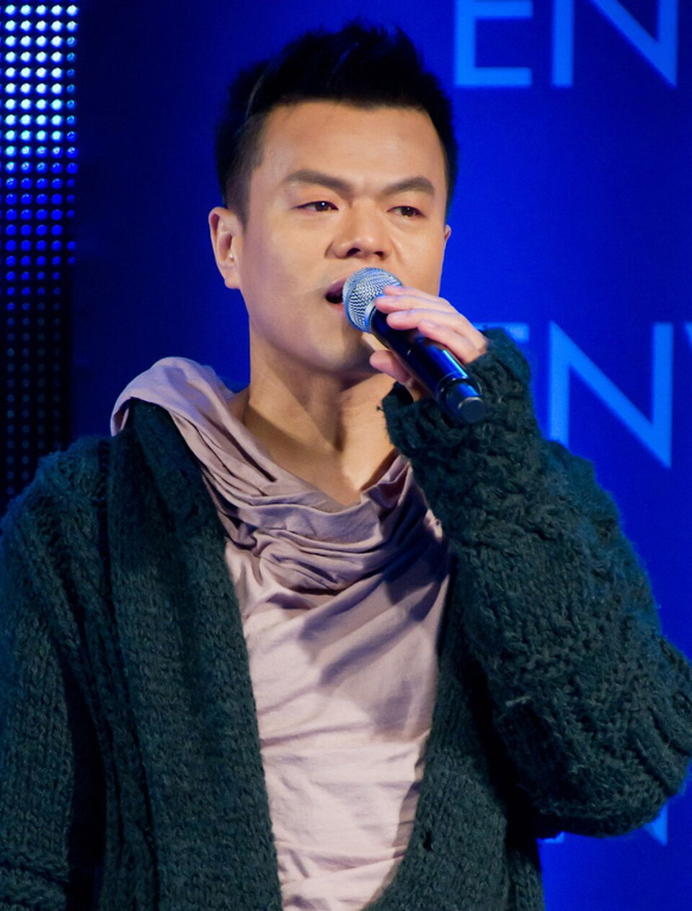

Name: Park Jin-young AKA JY.Park (aka Jypapi)
Birthday: December 13, 1971
Age: 52 years old
MBTI: ENFJ
Roles : Founder of JYPE, and Solo artist.
Story : He was born in Gwangjin-gu, Seoul, South Korea. He attended Yonsei University and graduated with a bachelors degree in geology in 1996. In 1997, he became the founder and CEO of JYP Entertainment, one of the most profitable entertainment agencies in South Korea.
Facts: He is married to actress Park Ji-yoon and they have two children, a son and a daughter. He is known for his unique fashion sense and has been recognized as a style icon in South Korea. In addition to his work in the music industry, he has also appeared as a judge on various talent shows, including "K-pop Star" and "Produce 101." He has created and managed highly successful K-pop acts including Rain, Wonder Girls, GOT7, and TWICE. He is also known for his philanthropic efforts, including donations to various charities and organizations.